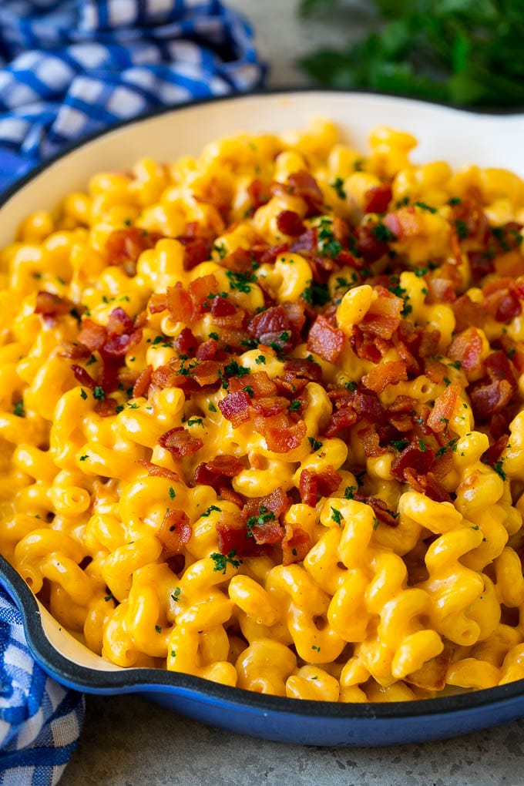

Mac 'n Cheese: Which is Best?
Kraft Mac 'n Cheese
Kraft Mac 'n Cheese is so amazing. I could honestly eat it everyday but I would rather not gain 3o pounds a month. Anyways, Kraft is great for three main reasons.
- It is super cheap! If you are balling on a budget, then Kraft is perfect! It's not expensive and tastes amazing
- It is super quick to make! Cooking Kraft Mac takes max 15 minutes including time for the water to boil!
- Lastly, it is nostalgic! Whenever you eat Kraft Mac, you are taken back to your childhood, to simpler times.

Homemade Mac 'n Cheese
Homemade mac n cheese is also amazing! When you go out to eat or on Thanksgiving, you know that homemade mac n cheese will hit the spot!
- There is much more variation! You can add bacon, 5 types of cheese, breadcrumbs on top, even broccoli (ew) With homemade mac, you can really make it however you like it!
- Also, now you can make homemade mac in the microwave which makes it even faster than Kraft mac! If you are really craving that homemade flavor but don't have the time... just stick it in a mug in the microwave and you are good to go!
- Lastly, homemade mac really just makes you think of your family because it is such a comfort food! Everytime I eat some homemade mac n cheese, I am either at a family cook-out or at a restaurant with my family. 